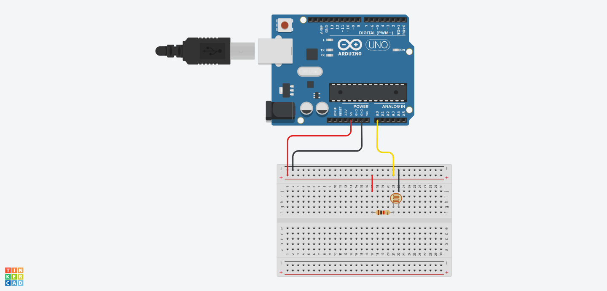
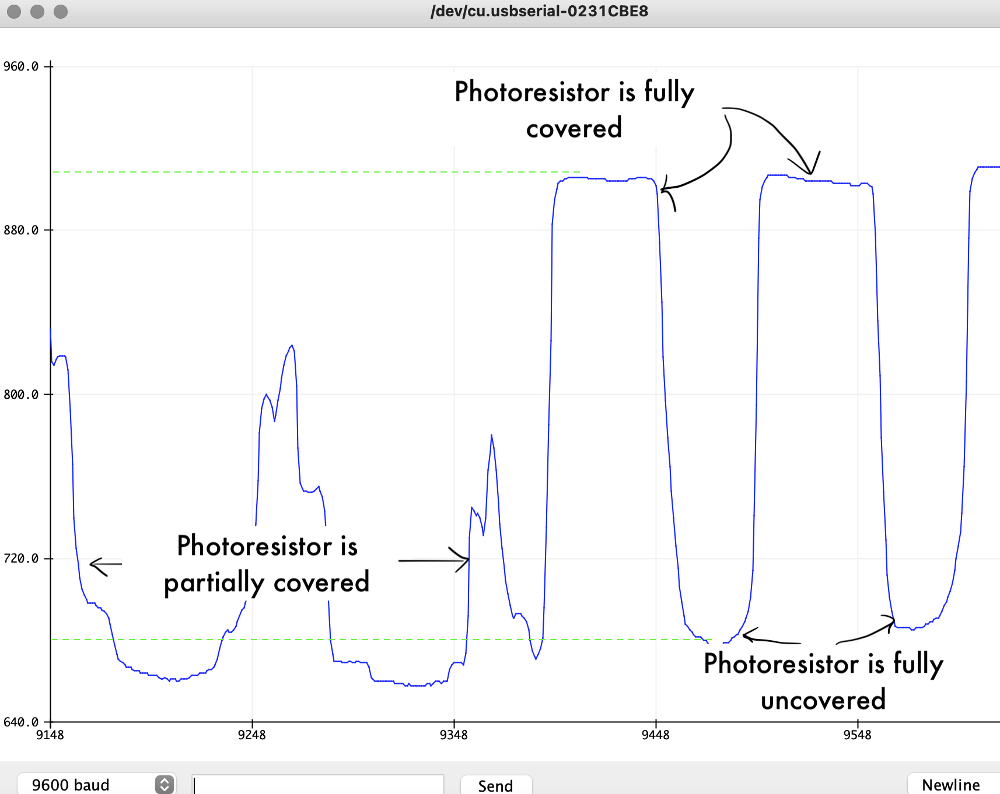
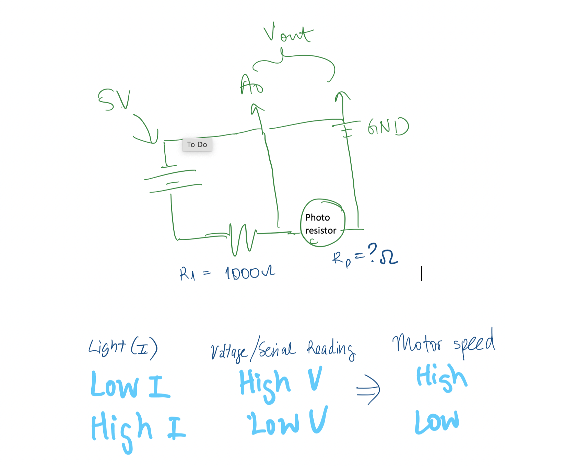
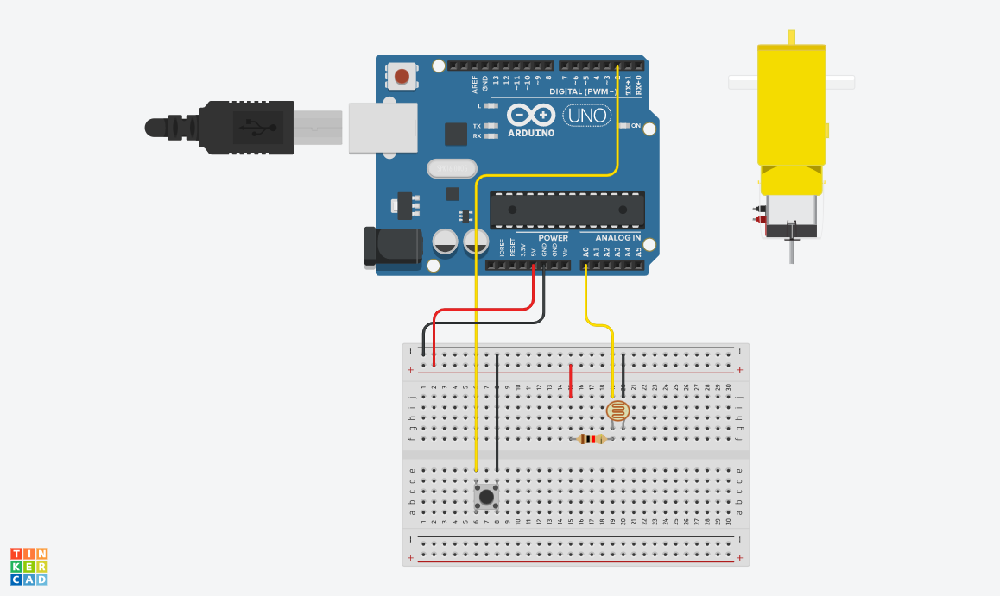

Driving Motor Speed with Light Sensor
This week's project asked us to code our microcontroller to do something. I thought it would be a good opportunity to get started on features I would use for my final project. In particular, I wanted to start working on the light sensing feature of my final project. Most industrial solar farms have the path of the sun pre-programmed into their tracking systems, but I thought I could begin by creating a simple motor that turned on when it detected dimming of light. After rummaging through our circuitry supplies in the Makerspace, I found a photoresistor which would be useful to put together with a motor.Testing the photoresistor
First I wanted to test that the photoresistor I found was in working condition. I created simple circuit with photoresistor and a diode in series and used my microcontroller as a power source. I could see the diode dim and undim in response to the photoresistor being covered or uncovered, so I knew that the element was usable.

Programming Input: Light
Next, I swapped out the diode with a 1 kOhm resistor to create a voltage divider circuit. My circuit was set up as shown in the diagram below.
I lightly modified the pre-programmed Arduino code found at File>Examples>Basics>AnalogReadSerial to produce the code below.
void setup() {
Serial.begin(9600);
}
void loop() {
int photo_value = analogRead(A0);
Serial.println(photo_value);
delay(100);
}
I observed Serial Monitor tool to pick out the maximum and minimum values that the photoresistor produced. As shown in the screenshot, when the photoresistor was completely uncovered and exposed to the ambient lighting of the classroom, the microcontroller read a minimum value of ~600. When the photoresistor was completely covered, thus stimulating low light conditions, the microcontroller read a maximum value of ~950. These values will be used later to correspond to when the motor should start and stop.
Programmming Output: Motor speed
For the second half of this project, I had to set up my motor output.
I started with the instructions to drive a motor with an L9110 motor bridge provided by our course documentation. I was not familiar with the workings of an H-bridge motor driver, so I watched a few Youtube videos out of interest (here's one that's just 2 minutes). It's not as complicated an element as I expected, but its good that it provides such fine control over what is a very simple DC motor.
The course documentation provides the following Arduino code. The code does two things - first, it turns the motor on and off and second, it sets the motor speed by using a function called map().
void setup() {
pinMode(3, OUTPUT);
pinMode(A0, OUTPUT); //This will be GND for the potentiometer
pinMode(A4, OUTPUT);
digitalWrite(A0, LOW);
digitalWrite(A4, HIGH);
}
void loop() {
int pot_value = analogRead(A2); //pot wiper is on A2
int motor_speed = map(pot_value, 0, 1023, 255, 0); // map motor_level to pot_value so that zero corresponds to lowest speed
analogWrite(3, motor_speed);
delay(1);
}
This code is written for the values inputted by a potentiometer, so to use it with the input of a photoresistor, I needed to modify the map function (bolded above). I wanted the motor to be at rest when the photoresistor was exposed to maximum light, increase speed linearly as lighting dimmed, and to reach maximum speed when the photoresistor was completely covered. Figuring out how the amount of light corresponded to motor speed was a little tricky, but with some sketching I was able to get my inputs and outputs straight in my head.
So recalling the range of values that my photoresistor produced in the previous section and after some trial and error, I chose to map the motor speed of 0 - 250 to an analog read value of 620 - 900. Pulling my two pieces of code together, I produced the following:
const int A1A = 3; // define pin 3 for A-1A (PWM Speed)
const int A1B = 4; // define pin 4 for A-1B (direction)
bool read_enable = true;
void setup() {
Serial.begin(9600);
pinMode(A1A, OUTPUT); // specify these pins as outputs
pinMode(A1B, OUTPUT);
analogWrite(A1A, 0); // start with the motors off
digitalWrite(A1B, LOW);
}
void loop() {
int photo_value = analogRead(A0);
Serial.println(photo_value);
// Map motor_speed to analog input from photoresistor so that motor runs faster when less light is detected
int motor_speed = map(photo_value, 620, 900, 0, 250);
analogWrite(A1A, motor_speed);
digitalWrite(A1B, LOW);
delay(10);
}
On/off button
I noticed during my testing that the motor speed did not slow linearly until it stopped cleanly at a value of 0. Instead it began to stall at a motor speed of around ~50, where I assume such a small speed value was not enough to overcome the internal friction of the motor. The stalling motor made an unpleasant noise and I imagined it was not great for the lifetime of the motor, so I wanted to install an on/off button to my set up to ease my future testing.
One of our teaching fellows, Chris , luckily had a lot of experience programming similar functions on Arduino, so he was able to walk me through this next section. In order to understand what was happing in my setup function, the following documentation was useful: attachInterrupt() and Digital pins. In sum, a push button connected to the microcontroller board on pin 2. Using attachInterrupt, the microcontroller senses when the button is pushed to run the function on_off, which flips a boolean value (read_enable)between true and false. Now within my main function, if read_enable is set to true, the code runs as normal and the motor and photoresistor interacts. If read_enable is set to false, then the code just outputs a string "Circuit is off". The bolded code below is what was added/changed from the previous iteration of code.
const int A1A = 3; // define pin 3 for A-1A (PWM Speed)
const int A1B = 4; // define pin 4 for A-1B (direction)
bool read_enable = false; //start with main code off
void setup() {
Serial.begin(9600);
pinMode(A1A, OUTPUT); // specify these pins as outputs
pinMode(A1B, OUTPUT);
analogWrite(A1A, 0); // start with the motors off
digitalWrite(A1B, LOW);
pinMode(2, INPUT_PULLUP);
attachInterrupt(digitalPinToInterrupt(2), on_off, FALLING);
}
void on_off() {
delayMicroseconds(40000);
read_enable = !read_enable; //switches read_enable from true to false with each button press
}
void loop() {
if (read_enable) {
int photo_value = analogRead(A0);
Serial.println(photo_value);
int motor_speed = map(photo_value, 620, 900, 0, 250);
analogWrite(A1A, motor_speed);
digitalWrite(A1B, LOW);
delay(10);
}
else {
analogWrite(A1A, 0);
Serial.println("Circuit is off");
}
Serial.println(read_enable);
}
My circuit board set up was done as shown below (sans the connections to the motor and motor bridge as TinkerCAD did not have that component).

The final result is demonstrated in the gif below. When the photoresistor is exposed to the full lighting of the classroom (simulating a solar panel facing the sun at the optimum angle), the motor is stopped. When the the photoresistor is obstructed (simulating the sun moving away from the solar panel through the course of the day), the motor powers on and increases in speed until it senses optimum light conditions again. The on/off button is also desmontrated in the gif below in working condition.